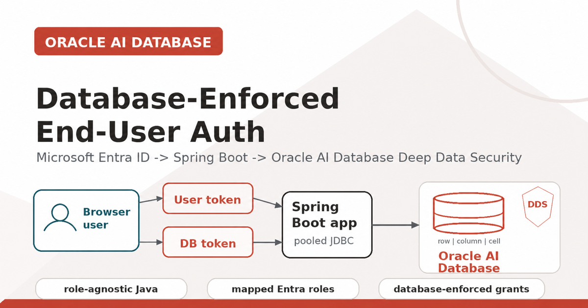

Oracle AI Database 26ai + Spring Boot + Microsoft Entra ID
Develop Database-Enforced End-User Auth with Oracle AI Database Deep Data Security and Java
A practical walkthrough for propagating Microsoft Entra identity through a Spring Boot application via a JDBC connection to Oracle AI Database, which enforces row, column, and cell-level access rules.
Yes—an enterprise Spring Boot application can keep pooled JDBC connections while Oracle AI Database enforces authorization for each signed-in Microsoft Entra user. The application propagates user and database tokens; Deep Data Security applies declarative row, column, and cell-level rules when SQL executes.

Key Takeaways
- Pooled JDBC connections can carry end-user identity when application code or
ojdbc-provider-springattaches an Oracle JDBC end-user security context before SQL runs. - The OAuth on-behalf-of flow produces a separate database-access token, so the user token proves the browser user while the database token proves access to Oracle AI Database.
- Microsoft Entra app roles such as EMPLOYEES and MANAGERS map to Oracle Deep Data Security data roles, letting the same SQL return different rows based on the signed-in user.
- The Java app stays role-agnostic: Oracle AI Database becomes the enforcement point for row, column, and cell-level authorization.
Source code and video
All source code for the app is available in the GitHub repo.
Why This Matters
Most enterprise Java services use a connection pool. That is good engineering: fast, stable, observable, and easy to operate. It also means every request may reach the database through the same application database account.
That is where authorization gets tricky. If Emma and Marvin both use the same pooled database user, the database cannot naturally tell which rows belong to Emma, which columns Marvin may see, or which values a manager may update.
One option is to push that logic into every application query. Another is to create separate datasources or connection pools per user. Neither is a good fit for real enterprise systems.
Oracle Deep Data Security changes the shape of the problem. The application still uses a pooled connection, but it attaches an end-user security context to the JDBC connection before SQL runs. Oracle AI Database evaluates declarative data grants at execution time.
This matters even more for agentic applications. Agents, copilots, and natural-language SQL tools can fan out into many possible data paths. With Deep Data Security, the database remains the final policy enforcement point for fine-grained row, column, and cell-level access.
The important idea: the Spring Boot app does not rewrite SQL or implement authorization logic. It propagates identity and tokens to Oracle AI Database, which enforces authorization policies.
This walkthrough includes the Microsoft Entra setup explicitly instead of only linking to the Microsoft documentation. That part is easy to get subtly wrong, and writing it down forced me to understand it better too.
A good starting point, and the one I extended to create this Java app, is Richard C. Evans's excellent LiveLabs FastLab: Identity-Aware Database Access with Microsoft Entra ID and Oracle Deep Data Security. While I am giving credit due, I will mention that Michael McMahon is the fantastic and friendly developer who wrote the Java support for this Deep Data Security feature.
What We Are Building
The demo is a Spring Boot application that performs four main jobs:
- Authenticates a browser user with Microsoft Entra ID.
- Requests a database-access token using the OAuth 2.0 on-behalf-of flow.
- Attaches both tokens to an Oracle JDBC connection with EndUserSecurityContext.
- Runs a normal SQL query against an HR table while Oracle AI Database enforces data grants.
The repo includes two aligned demos, both using Oracle UCP for pooled JDBC connections:
- Explicit JDBC API version: application code obtains both tokens and calls
OracleConnection.setEndUserSecurityContext(...)andclearEndUserSecurityContext(). - ojdbc-provider-spring provider/SPI version: Oracle JDBC reads the current Spring Security context and supplies the end-user security context through the provider SPI.
Runtime Flow
- The browser opens GET /deepsec/query.
- Spring Security redirects the browser to Microsoft Entra ID.
- The user signs in.
- Spring Security receives an authorization code and exchanges it for the user's Entra access token.
- The backend exchanges that user token for a separate database-access token using OAuth 2.0 on-behalf-of.
- The app creates an Oracle JDBC EndUserSecurityContext with both tokens.
- Oracle AI Database validates the context, activates mapped data roles from the Entra roles claim, and enforces data grants while SQL runs.
- The app clears the context before returning the connection to the pool.
Outcome: the application remains role-agnostic. Authorization logic is removed from Java code. Oracle AI Database becomes the enforcement point.
I run the same endpoint twice to make the behavior obvious.
Employee result
First, the signed-in Entra user has the EMPLOYEES app role, and one sample employee row is mapped to that user's ORA_END_USER_CONTEXT.username. The app executes the same business SQL and Oracle returns only that employee row:
{"rows":["3:Emma Baker"]}Manager result
Then I either sign in as a separate manager Entra user or, for the video, change the same Paul Parkinson Entra user's database/API enterprise-application assignment so the fresh token carries MANAGERS instead of, or in addition to, EMPLOYEES. For the one-user demo, I map that same real Entra username to the sample manager row so the manager end-user context resolves to the manager employee ID.
The request is still GET /deepsec/query. The SQL is still the same default query. The connection pool is still the same application pool. The result set changes because Oracle activates HRAPP_MANAGERS from the token role claim and applies the manager data grant, with restricted columns still protected by the database.
{"rows":["3:Emma Baker","4:Charlie Davis","5:Dana Lee"]}Oracle UCP Connection Pooling
Both demo apps let Spring Boot create and configure Oracle UCP from spring.datasource properties. The explicit API demo remains explicit only where that distinction matters: its service code sets and clears EndUserSecurityContext. The provider demo instead supplies its additional JDBC provider settings through spring.datasource.oracleucp.connection-properties.
The Oracle production dependency POM keeps the JDK 17 JDBC driver, UCP, wallet support, and related companion artifacts on the same release line:
<dependency>
<groupId>org.springframework.boot</groupId>
<artifactId>spring-boot-starter-jdbc</artifactId>
</dependency>
<dependency>
<groupId>com.oracle.database.jdbc</groupId>
<artifactId>ojdbc17-production</artifactId>
<version>${oracle.jdbc.version}</version>
<type>pom</type>
</dependency>In the database, Microsoft Entra app roles map to Oracle Deep Data Security data roles:
CREATE OR REPLACE DATA ROLE hrapp_employees
MAPPED TO 'AZURE_ROLE=EMPLOYEES';
CREATE OR REPLACE DATA ROLE hrapp_managers
MAPPED TO 'AZURE_ROLE=MANAGERS';If the signed-in user has the Entra app role EMPLOYEES, Oracle activates HRAPP_EMPLOYEES. If that same user later has the Entra app role MANAGERS, or a different signed-in user has MANAGERS, Oracle activates the manager data role. Users can also have multiple app roles. The application code and SQL query do not change.
Understand the Token Model Before OBO
The on-behalf-of flow is easier to follow if you separate the two tokens early:
| Token | What it proves | Audience / important claims |
|---|---|---|
| User token | Proves the signed-in browser user to the Spring Boot application. The backend uses it as the assertion for OBO. | Audience is the Spring Boot app. It is requested during browser login. |
| Database-access token | Proves that the request is addressed to the Oracle AI Database protected resource. | Audience is the database/API app. For this demo, it should be v2 and include the roles claim used for DDS role mapping. |
Both tokens matter because the Java code creates the context with EndUserSecurityContext.createWithToken(databaseAccessToken, endUserToken).
Real Users, Sample HR Records, and Role Switching
Real Entra users
The browser login uses a real Microsoft Entra user. That user receives app-role assignments on the database/API Enterprise Application, such as EMPLOYEES or MANAGERS.
Sample HR records
Emma, Marvin, Charlie, and Dana are sample HR rows in the database, not Entra users. For the employee demo, one HR row is mapped to the value Oracle sees in ORA_END_USER_CONTEXT.username.
Role reassignment demonstration
There are two easy ways to show the behavior:
- Two-user path: sign in as two different Entra users with different app-role assignments.
- One-user path: keep one real demo user, change that user's database/API Enterprise Application role assignment, get a fresh token, and map the same Entra username to different sample HR rows.
In the video I use my Paul Parkinson Entra user for the one-user path. In both paths, the user identity and role claims travel together in the security context, and the same endpoint and SQL return different data because Oracle sees different end-user identity and role claims.
Create an Oracle AI Database if You Do Not Have One
You need an Oracle AI Database with Deep Data Security support. Any 23.26.2 or later database is fine for this walkthrough, including Autonomous Database, Oracle Database Free in a container, or another local or cloud database you can reach from the Spring Boot app.
The Java side uses the 23.26.2.0.0 JDBC/UCP artifacts, so keep the database and driver versions aligned at that level or later before you start troubleshooting identity behavior.
Entra Setup
All of the identity setup below happens in the Azure Portal under Microsoft Entra ID. You will move between App registrations and Enterprise applications.
App registration responsibilities
| Registration / app | Responsibility | Where assignments happen |
|---|---|---|
| Spring Boot app registration | Represents the Java web application and OAuth client. It owns the redirect URI, client ID, client secret, and application scope. | It requests permission to call the database/API app on behalf of the user. |
| Database/API app registration | Represents Oracle AI Database as the protected resource. It defines the database scope and app roles such as EMPLOYEES and MANAGERS. | User or group role assignments happen on the database/API Enterprise Application because that is the resource Oracle validates. |
1. Create the Spring Boot app registration
Create a separate app registration for the Spring Boot application. Add a Web redirect URI:
http://localhost:8080/login/oauth2/code/entraFor the provider-version browser UI, also add a SPA redirect URI:
http://localhost:18080Expose an API for the Spring Boot app too, using:
api://<SPRING_BOOT_APP_CLIENT_ID>Add a delegated user_impersonation scope. This scope is requested during browser login so the resulting token has the Spring Boot app as its audience. That is required for the on-behalf-of exchange.

2. Create the database/API app registration
Create an app registration named something like Oracle AI Database DeepSec API. Set its Application ID URI to the default form:
api://<DB_APP_CLIENT_ID>That default api://... URI is the Autonomous Database path I use in this walkthrough. If you are targeting Oracle Database Free or another non-ADB database, use a domain-qualified https://... Application ID URI instead and keep the later database configuration, scope, and tnsnames.ora values aligned.
Add a delegated scope named user_impersonation. Add app roles named EMPLOYEES and MANAGERS. These are the role values Oracle later sees in the database-access token and maps to DDS data roles.


In the database/API app manifest, set requestedAccessTokenVersion to 2. In older Azure AD Graph and portal references this is often called accessTokenAcceptedVersion. It tells Microsoft Entra which access-token format the resource app supports. For this demo, the database-access token should decode with ver=2.0 and an aud value matching the database/API app client ID.
"requestedAccessTokenVersion": 2I also added the upn optional claim for access tokens so the end-user context has a stable username value to compare against the sample hr.employees.user_name column.

3. Connect the two registrations
In the Spring Boot app registration, open API permissions, add a permission from My APIs, choose the database/API registration, and grant its delegated user_impersonation scope.

Then go to Enterprise applications, open the database/API enterprise application, and assign users or groups to EMPLOYEES or MANAGERS. For database enforcement, the important assignment is on the database/API enterprise application, because that is the resource for the database-access token Oracle validates.

The resulting application configuration looks like this:
DEEPSEC_ENTRA_TENANT_ID="your-tenant-id"
DEEPSEC_ENTRA_CLIENT_ID="<SPRING_BOOT_APP_CLIENT_ID>"
DEEPSEC_ENTRA_CLIENT_SECRET="spring-boot-app-client-secret"
DEEPSEC_ENTRA_DATABASE_SCOPE="api://<DB_APP_CLIENT_ID>/user_impersonation"
DEEPSEC_ENTRA_APPLICATION_SCOPE="openid,profile,email,api://<SPRING_BOOT_APP_CLIENT_ID>/user_impersonation"The provider-version browser UI uses the same application scope and can use the same client ID or a separate public-client app registration:
DEEPSEC_ENTRA_BROWSER_CLIENT_ID="<SPRING_BOOT_APP_CLIENT_ID>"
DEEPSEC_SESSION_INIT_SQL="alter session disable parallel query"Database Configuration
Oracle AI Database needs to trust the Entra tenant and the database/API app registration before it can validate the database-access token.
- Choose the right database-admin setup script for your environment.
- Run the Autonomous Database script as ADMIN after editing DEFINE values, or run the Oracle Database Free script as SYSDBA or equivalent.
- For non-ADB databases, keep the domain-qualified Application ID URI aligned across the database/API app registration, DEEPSEC_ENTRA_DATABASE_SCOPE, and tnsnames.ora azure_db_app_id_uri.
- Verify that the database picked up the identity provider.
- Grant the connection-pool user only the privileges it needs to connect and attach an end-user security context.
The repo includes two database-admin setup scripts:
- sql-entraid/01_enable_adb_entra_external_authentication.sql uses DBMS_CLOUD_ADMIN.ENABLE_EXTERNAL_AUTHENTICATION for Autonomous Database.
- sql-entraid/01_enable_database_free_entra_external_authentication.sql uses IDENTITY_PROVIDER_TYPE and IDENTITY_PROVIDER_CONFIG for Oracle Database Free or another non-ADB install.
-- Autonomous Database, run once as ADMIN after editing DEFINE values:
@security/deepdatasecurity-api-version/sql-entraid/01_enable_adb_entra_external_authentication.sql
-- Oracle Database Free container, run once as SYSDBA or equivalent:
@security/deepdatasecurity-api-version/sql-entraid/01_enable_database_free_entra_external_authentication.sqlVerify the database picked up the identity provider:
SELECT name, value
FROM v$parameter
WHERE name IN ('identity_provider_type', 'identity_provider_config');The application connection-pool user only needs the ability to connect and attach an end-user security context:
GRANT CREATE SESSION TO hr_app_user;
GRANT CREATE END USER SECURITY CONTEXT TO hr_app_user;Optional Connection Metadata in tnsnames.ora
This section is optional. The provider demo and its Deep Data Security flow do not require Entra metadata in tnsnames.ora; use it when you want direct JDBC Thin interactive Entra sign-in or centrally managed TNS connection metadata.
A wallet's tnsnames.ora entry can carry that Entra-specific connection metadata. The key additions are token_auth=azure_interactive and azure_db_app_id_uri=api://<DB_APP_CLIENT_ID> inside the security block. A mydb_high alias would look like this:
mydb_high =
(description=
(retry_count=20)(retry_delay=3)
(address=(protocol=tcps)(port=1522)(host=adb.us-ashburn-1.oraclecloud.com))
(connect_data=(service_name=asdf_mydb_high.adb.oraclecloud.com))
(security=
(ssl_server_dn_match=yes)
(token_auth=azure_interactive)
(azure_db_app_id_uri=api://4ad8a6b8-asdf-asdf-asdf-5d14bcc22c8a)))Use your own service name and database/API app ID URI. token_auth=azure_interactive is useful for direct JDBC Thin testing because the driver can open the browser-based Entra sign-in flow. azure_db_app_id_uri tells the driver which Entra resource represents the database.
The Spring Boot demo itself uses a normal pooled application database user and attaches the Deep Data Security context programmatically, so I keep a separate application alias without token_auth=azure_interactive for the UCP pool.
The Data Grants
The policy itself lives in SQL. For an employee, the row predicate says a user can see rows where the table username matches ORA_END_USER_CONTEXT.username:
CREATE OR REPLACE DATA GRANT hr.HRAPP_EMPLOYEES_ACCESS
AS SELECT, UPDATE(phone_number, first_name)
ON hr.employees
WHERE upper(user_name) = upper(ORA_END_USER_CONTEXT.username)
TO hrapp_employees;For managers, the policy permits access to direct reports while excluding sensitive columns such as ssn:
CREATE OR REPLACE DATA GRANT hr.HRAPP_MANAGER_ACCESS
AS SELECT (ALL COLUMNS EXCEPT ssn),
UPDATE (salary, department_id, first_name)
ON hr.employees
WHERE manager_id = ORA_END_USER_CONTEXT.HR.EMP_CTX.ID
TO hrapp_managers;Notice what is not happening here: the Java service or AI agent is not building custom SQL for employees and managers. The app can issue the same business query, and Oracle filters or restricts the result according to the active end-user security context.
The Spring Boot Code
The service first receives the browser user's Entra token from Spring Security. Then it requests a database-access token with the OAuth 2.0 on-behalf-of flow:
MultiValueMap<String, String> form = new LinkedMultiValueMap<>();
form.add("grant_type", "urn:ietf:params:oauth:grant-type:jwt-bearer");
form.add("client_id", entraId.getClientId());
form.add("client_secret", entraId.getClientSecret());
form.add("scope", entraId.getDatabaseScope());
form.add("assertion", endUserToken);
form.add("requested_token_use", "on_behalf_of");Then the app attaches the Deep Data Security context to the Oracle JDBC connection. The method names are on oracle.jdbc.OracleConnection. The important calls are setEndUserSecurityContext(...) before SQL and clearEndUserSecurityContext() before returning the connection to the pool.
OracleConnection oracleConnection =
connection instanceof OracleConnection
? (OracleConnection) connection
: connection.unwrap(OracleConnection.class);
EndUserSecurityContext context =
EndUserSecurityContext.createWithToken(databaseAccessToken, endUserToken);
oracleConnection.setEndUserSecurityContext(context);
try {
return runQuery(connection, sql);
}
finally {
oracleConnection.clearEndUserSecurityContext();
}Connection-pool hygiene: the finally block is not cosmetic. In a pooled application, clearing the context before returning a connection to the pool is mandatory.
Provider Version: ojdbc-provider-spring
The explicit API version is useful because it shows the moving parts: Spring obtains the signed-in user token, the app exchanges it for a database-access token, and application code calls OracleConnection.setEndUserSecurityContext(...). The provider version keeps the same database policy model but changes where that context is assembled.
In the provider version, the protected HTTP endpoint is a Spring Security OAuth2 resource-server endpoint. A request reaches /deepsec/query with an OAuth2 bearer token. Spring validates the token and stores the authentication in the request security context. When the service borrows a JDBC connection, ojdbc-provider-spring reads that Spring Security context, obtains the database-access token through the configured OAuth2 client registration, and supplies the EndUserSecurityContext through the Oracle JDBC provider SPI.
Compared with the API version, the service no longer calls OracleConnection.setEndUserSecurityContext(...) or clearEndUserSecurityContext(). The Deep Data Security context setup moves from application service code into JDBC/Spring provider configuration.
Provider dependency
The provider app adds the Oracle JDBC Spring provider dependency alongside the Oracle JDBC driver and wallet/security jars:
<dependency>
<groupId>com.oracle.database.jdbc</groupId>
<artifactId>ojdbc-provider-spring</artifactId>
<version>${ojdbc.provider.version}</version>
</dependency>Provider configuration
Spring Boot 3.3 creates the Oracle UCP PoolDataSource directly from configuration, so the provider app no longer needs a dedicated UcpDataSourceConfiguration class. Set the datasource type to UCP and put the JDBC provider settings under spring.datasource.oracleucp.connection-properties. The registrationId value must match the Spring OAuth2 client registration that can obtain a database-access token for Oracle AI Database:
spring:
datasource:
type: oracle.ucp.jdbc.PoolDataSource
url: ${DEEPSEC_JDBC_URL:}
username: ${DEEPSEC_USERNAME:}
password: ${DEEPSEC_PASSWORD:}
driver-class-name: oracle.jdbc.OracleDriver
oracleucp:
connection-factory-class-name: oracle.jdbc.datasource.impl.OracleDataSource
connection-pool-name: ${DEEPSEC_UCP_POOL_NAME:DeepDataSecurityProviderUcpPool}
initial-pool-size: ${DEEPSEC_UCP_INITIAL_POOL_SIZE:1}
min-pool-size: ${DEEPSEC_UCP_MIN_POOL_SIZE:1}
max-pool-size: ${DEEPSEC_POOL_SIZE:4}
connection-properties:
"oracle.jdbc.provider.endUserSecurityContext": ojdbc-provider-spring-end-user-security-context
"oracle.jdbc.provider.endUserSecurityContext.registrationId": entraSpring Boot binds those settings to UCP, and Oracle JDBC reads the provider properties when a pooled connection is borrowed. The provider then obtains the end-user token from Spring Security and uses the matching OAuth2 client registration to request the database-access token. Optional dataRoles and endUserContextAttributes properties can be added to the same connection-properties map.
Resource-server security configuration
The provider app keeps /deepsec/query and /deepsec/whoami protected while allowing the browser page and setup endpoints to load. It also trusts both common Entra issuer forms for the configured tenant, which is helpful when one app registration issues v1 access tokens while another flow emits v2 tokens:
http
.authorizeHttpRequests(authorize -> authorize
.requestMatchers(
"/", "/index.html", "/app.js", "/styles.css",
"/deepsec/browser-config", "/deepsec/health", "/deepsec/policies")
.permitAll()
.anyRequest().authenticated())
.oauth2Client(Customizer.withDefaults())
.oauth2ResourceServer(oauth2 -> oauth2
.authenticationManagerResolver(jwtAuthenticationManagerResolver));
return JwtIssuerAuthenticationManagerResolver.fromTrustedIssuers(
"https://sts.windows.net/" + tenantId + "/",
"https://login.microsoftonline.com/" + tenantId + "/v2.0");Service code becomes ordinary JDBC
With the provider enabled, the service code is intentionally boring. It checks out a connection and executes SQL. The provider supplies the end-user security context when JDBC needs it:
try (Connection connection = dataSource.getConnection();
Statement statement = connection.createStatement()) {
runSessionInit(statement);
try (ResultSet resultSet = statement.executeQuery(sql)) {
// read rows
}
}In my demo environment I set DEEPSEC_SESSION_INIT_SQL to alter session disable parallel query to avoid a database-side context handler issue with parallel execution. If your database policy package works under parallel query, set that value to empty.
Browser-friendly provider flow
A pure resource-server endpoint still needs an Authorization: Bearer header. To make the demo natural in a browser without adding a separate frontend build, the provider version includes a tiny same-origin page. It uses MSAL to sign in with Entra, obtains an access token for the Spring Boot API scope, and calls the protected endpoint with that bearer token:
const token = await getAccessToken();
const response = await fetch("/deepsec/query", {
headers: { Authorization: `Bearer ${token}` }
});The backend exposes only non-secret browser configuration at /deepsec/browser-config: tenant ID, browser client ID, and scope. Client secrets and database passwords stay server-side in .env or a secret manager.
Provider runtime flow
- The browser opens http://localhost:18080/.
- The page signs the user in with Entra and obtains an access token for api://<SPRING_BOOT_APP_CLIENT_ID>/user_impersonation.
- The page calls /deepsec/query with Authorization: Bearer <access-token>.
- Spring Security validates the token and creates the authenticated request context.
- ojdbc-provider-spring reads that context, obtains the database-access token with the entra OAuth2 client registration, and supplies the EndUserSecurityContext to Oracle JDBC.
- Oracle AI Database validates the context, activates mapped data roles, and enforces the same data grants shown earlier.
Running the Demo
The repository now has two runnable implementations. Use the API version when you want to teach the explicit OBO and OracleConnection API calls. Use the provider version when you want to show how a Spring resource-server endpoint can let ojdbc-provider-spring supply the Deep Data Security context.
Run the explicit API version
The API version uses Spring oauth2Login. Opening /deepsec/query in the browser redirects to Entra, then the controller receives an OAuth2AuthorizedClient and the service calls the Oracle JDBC Deep Data Security API directly.
cd security/deepdatasecurity-api-version
cp .env_example .env
vi .env
./build.sh
./run.sh
# Then open:
http://localhost:8080/deepsec/query
# Expected employee result:
{"rows":["3:Emma Baker"]}Run the provider/SPI version
The provider version is browser-first in the sample repo, but the backend remains a bearer-token resource server. Add http://localhost:18080 as a SPA redirect URI on the Entra app registration used by DEEPSEC_ENTRA_BROWSER_CLIENT_ID, then run:
cd security/deepdatasecurity-provider-version
cp .env_example .env
vi .env
./build_and_run.sh
# Then open:
http://localhost:18080/
# Click Sign in, then Run query.
# Expected employee result in the page:
{"query":{"rows":["3:Emma Baker"]}}For curl or Postman, request an Entra access token for DEEPSEC_ENTRA_APPLICATION_SCOPE and send it in the Authorization header:
curl -H "Authorization: Bearer ${ACCESS_TOKEN}" \
http://localhost:18080/deepsec/queryThere is still no app-side data-role switch in either flow. Oracle AI Database reads the Entra roles claim and activates the mapped DDS roles automatically.
The Nice Part: Changing Roles Without Changing Code
To demo manager behavior with one browser user, use this sequence:
- Assign that same real Entra user to the MANAGERS app role in the database/API enterprise application.
- Restart or otherwise force a fresh login so the token contains the updated role set.
- Map that user's username to a sample manager row for the one-user demo.
- Run the same GET /deepsec/query endpoint again.
In a real multi-user demo, you can instead sign in as a different Entra user who already has the MANAGERS app role and a matching manager row.
Now the Entra token contains a different role set. Oracle AI Database sees that during context creation, activates the matching DDS data role, and enforces the manager policy. The endpoint, Java code, connection pool, and SQL statement stay the same.
In the sample HR data used in the walkthrough, the manager row has direct reports Emma, Charlie, and Dana. So the same /deepsec/query call moves from a single employee row to the manager's direct-report set:
{"rows":["3:Emma Baker","4:Charlie Davis","5:Dana Lee"]}Helpful Tips
/deepsec/whoami is a setup/debug aid, not part of the authorization flow. It shows the exact username value Oracle sees in the end-user context. If your sample rows do not already match that value, use it to update one employee row for a quick demo:
http://localhost:8080/deepsec/whoami
UPDATE hr.employees
SET user_name = '<value returned by /deepsec/whoami>'
WHERE employee_id = 101;
COMMIT;- Empty rows can be success. If /deepsec/query returns {"rows":[]} with no exception, the DDS policy probably filtered everything. Make sure hr.employees.user_name matches the end-user context username.
- Use schema-qualified table names. With an active end-user context, unqualified employees can resolve unexpectedly. Use hr.employees.
- Make the database/API token v2. If Oracle reports an invalid database-access token, decode it and check ver=2.0 and an aud value matching the database/API app ID.
- Restart and use a fresh browser session after scope changes. The app reads .env at startup, and browsers cache login sessions aggressively.
Productionization Checklist
- Store the Entra client secret in a secret manager, not in a local file.
- Validate expected issuer, audience, scopes, tenant, and role claims explicitly.
- Manage data roles and data grants with versioned database migrations.
- Add integration tests that run the same query as employee and manager identities.
- Audit end-user contexts and data grant behavior in database monitoring.
- Always clear the end-user security context before returning a pooled connection.
References
- Demo source code
- Video walkthrough
- Oracle Database JDBC driver and UCP downloads
- Easy configuration of Oracle UCP with Spring Boot
- Oracle UCP best practices with Spring Boot
- OracleConnection API reference, 26ai
- Oracle JDBC Providers for Spring, ojdbc-provider-spring
- Oracle Deep Data Security announcement
- Richard C. Evans, LiveLabs FastLab: Identity-Aware Database Access with Microsoft Entra ID and Oracle Deep Data Security
- Oracle Deep Data Security concepts
- Configure Deep Data Security data grants
- SQL Reference: CREATE DATA GRANT
- Microsoft Entra ID with Oracle AI Database
- Microsoft Entra app manifest reference
- Microsoft identity platform access tokens
FAQ
What problem does this pattern solve?
It lets a Java service keep the operational benefits of a pooled application database user while still allowing Oracle AI Database to enforce access for the signed-in end user.
Why are there two tokens?
The user token proves who signed in to the Spring Boot app. The database-access token is addressed to the Oracle AI Database resource and carries the claims Oracle validates for role mapping and data grants.
Do employees and managers need different Java code?
No. The same endpoint, SQL statement, and connection pool are used. Different results come from Entra role claims mapped to Oracle Deep Data Security data roles.
Where should Entra role assignments be made?
Assign users or groups on the database/API Enterprise Application, because that application represents the Oracle AI Database resource for the database-access token.
Does the provider version still require a bearer token?
Yes. The backend endpoint is a resource-server endpoint. The browser sample obtains the token with MSAL and sends it automatically, while curl or Postman must send the Authorization header explicitly.
Which version should I show first?
Show the API version first when the audience needs to see the token exchange and EndUserSecurityContext calls. Show the provider version when the audience is focused on Spring configuration and reducing database-security code in services.